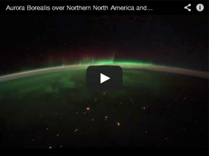

What are the Northern Lights?
The bright dancing lights of the aurora are actually collisions between electrically charged particles from the sun that enter the earth's atmosphere. The lights are seen above the magnetic poles of the northern and southern hemispheres. They are known as 'Aurora borealis' in the north and 'Aurora australis' in the south...
Auroral displays appear in many colors although pale green and pink are the most common. Shades of red, yellow, green, blue, and violet have been reported. The lights appear in many forms from patches or scattered clouds of light to streamers, arcs, rippling curtains or shooting rays that light up the sky with an eerie glow.
What causes the Northern Lights?
The Northern Lights are actually the result of collisions between gaseous particles in the Earth's atmosphere with charged particles released from the sun's atmosphere. Variations in color are due to the type of gas particles that are colliding. The most common auroral color, a pale yellowish-green, is produced by oxygen molecules located about 60 miles above the earth. Rare, all-red auroras are produced by high-altitude oxygen, at heights of up to 200 miles. Nitrogen produces blue or purplish-red aurora.
The Best Places to Watch
Because the phenomena occurs near the magnetic poles, northern lights have been seen as far south as New Orleans in the western hemisphere, while similar locations in the east never experience the mysterious lights. However the best places to watch the lights (in North America) are in the northwestern parts of Canada, particularly the Yukon, Nunavut, Northwest Territories and Alaska. Auroral displays can also be seen over the southern tip of Greenland and Iceland, the northern coast of Norway and over the coastal waters north of Siberia. Southern auroras are not often seen as they are concentrated in a ring around Antarctica and the southern Indian Ocean.
NORTHERN LIGHTS EXERCISE
Professor Bliss,
COM205 Fall 2019
September 26, 2019